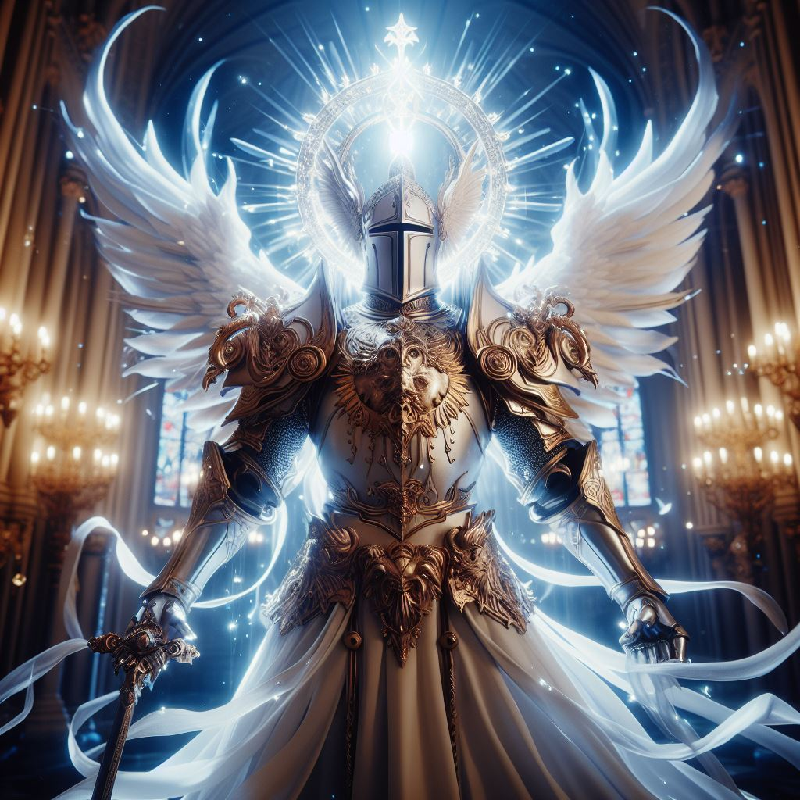

Запощено Автором сайта
Пост сделан 11 Февраля 2024 года 18:10 МСК

Глава 6: Возвращение света
С ведьмой побеждена, свет вернулся в Авалон. Элрик стал легендой — Белым Рыцарем, защитником света. Он продолжал служить королевству, но его глаза всегда светились, напоминая о благословении бога.
Глава 7: Тайна прошлого
Однажды, во время путешествия по древним руинам, Элрик обнаружил древний свиток. В нём была записана тайна, которая потрясла его. Оказывается, его родители были связаны с богом Люмиосом. Они были последними носителями света перед его исчезновением.
Глава 8: Возвращение бога
Элрик решил найти ответы. Он отправился в горы, где, по легенде, бог Люмиос последний раз являлся людям. Там он провёл дни в медитации, обращаясь к богу. И в один прекрасный день, свет озарил небо, и перед Элриком появился сам Люмиос.
Глава 9: Задача бога
Люмиос рассказал Элрику о том, что свет и тьма всегда борются друг с другом. Он дал ему новую миссию — найти и уничтожить артефакт, который может разрушить баланс между светом и тьмой. Элрик согласился.
Глава 10: Последний путь
Элрик отправился в опасное путешествие, чтобы найти артефакт. Он сражался с демонами, решал головоломки и искал ключи к тайнам древних храмов. В конечном итоге он нашёл артефакт — черную сферу, которая могла поглотить свет.
Глава 11: Свет внутри
Элрик понял, что артефакт необходимо уничтожить. Но внутри него он обнаружил частицу света — частицу души его родителей. Он решил сохранить её, чтобы свет всегда был с ним.
Так завершилась история о Белом Рыцаре, который не только защищал свет, но и нашёл его внутри себя. Его глаза продолжали светиться, напоминая о благословении бога.
Вернуться на главную